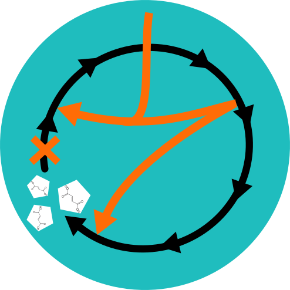
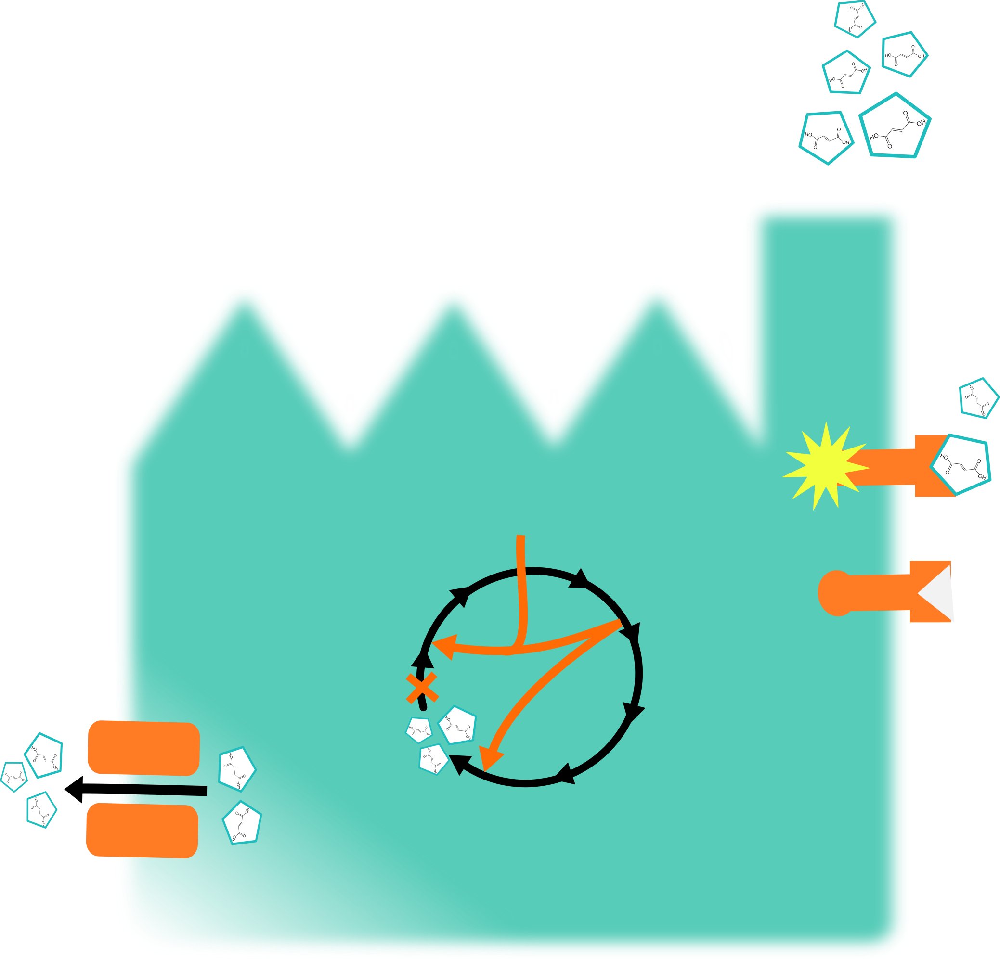
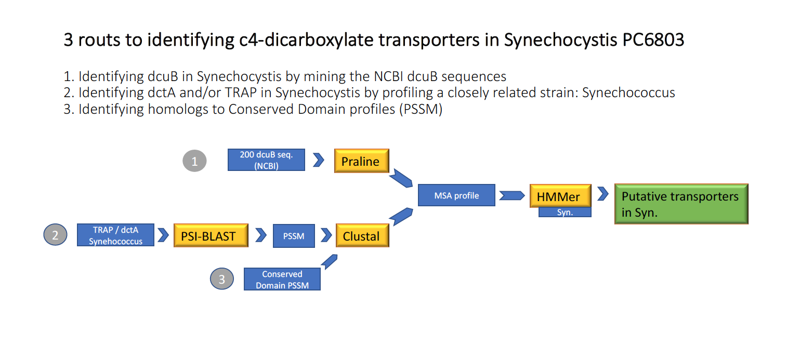
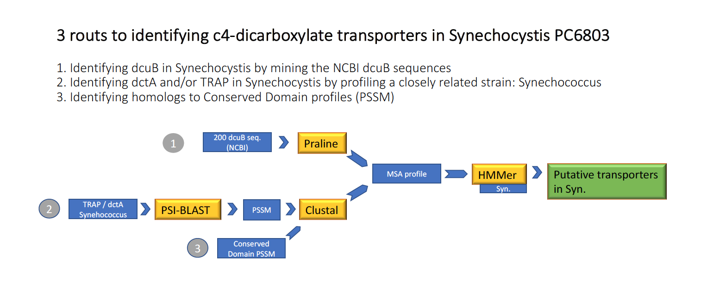
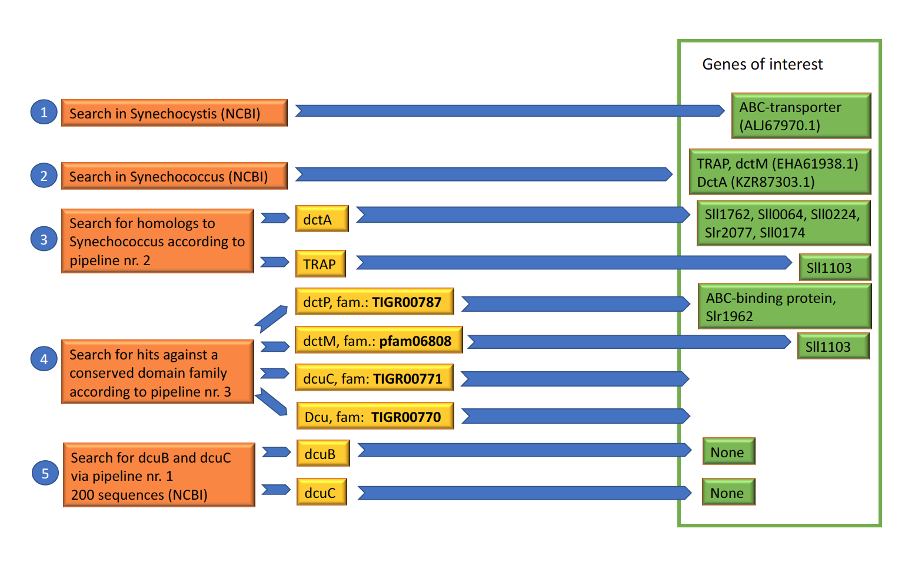
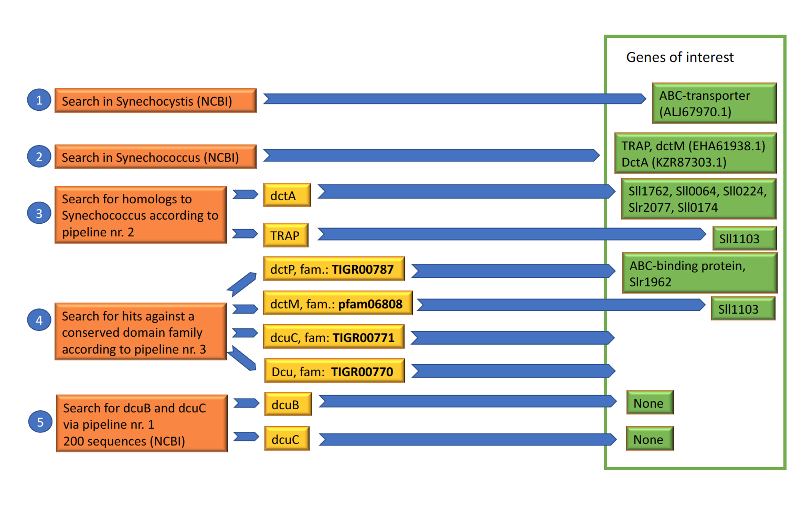
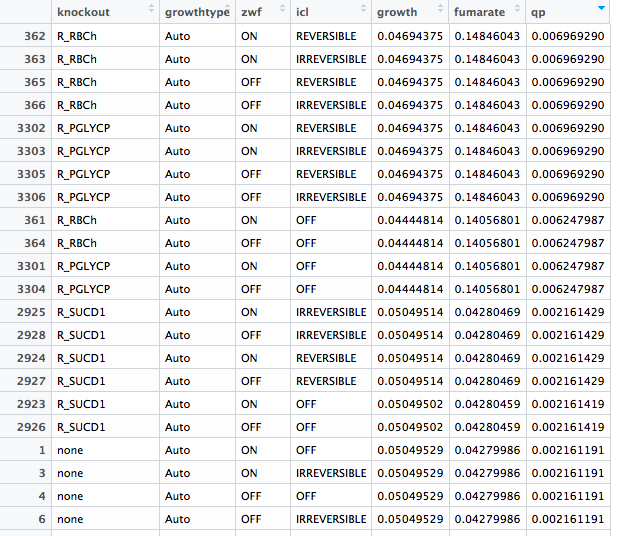
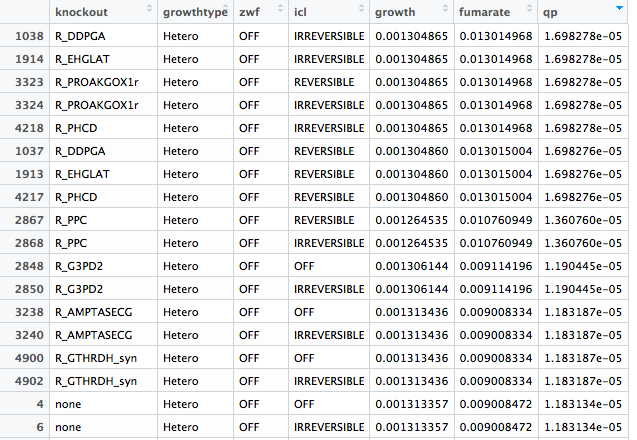
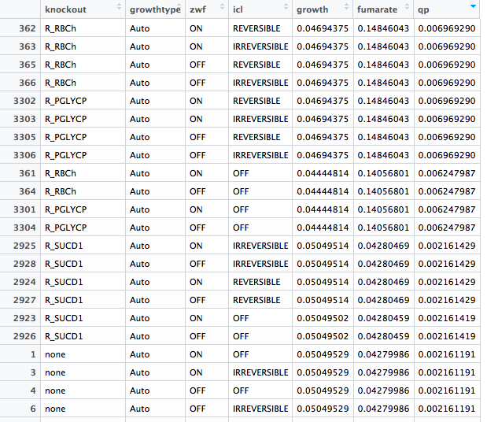
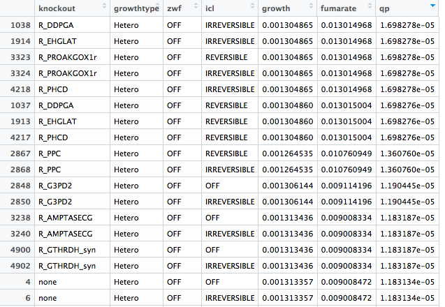

Team:Amsterdam/test/joeri/index
Good science comes with good documentation - or as our PI says - “one of the few mistakes that you can do in the lab is to not write down what you did”. We made a record based on our weekly meetings, which is made available below. Information is grouped chronologically per module, reflecting how the project was approached and documented.
Model

Production
Exportation
Detection

General Topics
Lab Journal
Week 14
▼
Robustness analysis. Take optimal flux of the shunt and start decreasing it, so now your mu is going to drop. reduced cost analysis. Conflicting goals of iGEM and Joeri’s project. For iGEM it is necessary to do shorter experiments with more replicates. Evolution is not interesting for iGEM. Fluctuations part might be important for iGEM. First constant light, then smooth di...regime. An easy way to increase fumarate production. Start with omics data, because this feeds into the other modules.
ML vs ICL and ML: test if it is thermodynamically possible to make this reversible. You have clear comparison if it reversible. This should be done in the targeted module. The synthetic biology part in E. coli is similar for both projects, so we need to team up: MS by Bram and ICL & MS by Yuki. We have to consider different types of MS (E. coli, codon optimized from E. coli). The physiology part in Synechocystis is totally different for both modules. Bram uses known promoters, Yuki uses promoter library. The analyzation of the timing of the shunt should be done by Bram with the known promoters. Additional experiment: Get whole library (this is a mix), apply regime, grow until OD. The ones that are still in there perform best.
You cannot put kinetics into genome model. You can make tables with affinity (Km and Kcat) and make your choice based on this. Take the maximal predictive flux and see whether this is compatible with the affinity of the transporter. You have to make a rational choice.
Linker length is really important. On paper it is quite easy, but in the lab it might be hard. If all else fails, and this works we could present this alone and it will still be good. Calculate CO2 → fumarate efficiency (E. coli vs Synechocystis). From biosensor track to transporter track. Maybe ask a econometrist to do this part. Add a sensitivity analysis.
Title and project description. We have to think of a title. We have to be careful for the political correctness of the presentation and title. We have to think about the standards of the other countries. Examples: “Making fumarate around the clock.” “Sustainability day and night. “ Biosafety Strains all always outperformed by wildtype. They cannot take over the wildtype, so it is contained. Even if there is contamination, you do not put marked genes in, because our genes are markerless.
Week 15
▼
- Max made a model using FAME software. Next:
- find optimal growth rate and fumarate production for MS flux.
- look into growing on glycogen instead of glucose.
- We use biobricks to fuse the two genes together
- Orientation of TA cloning: by Colony PCR primer design.
- Design plan for the lab with Wei.
- Found one potential C4-dicarboxylate transporter in Synechocystis
- Set up pipeline
- Discussed multiple transporter families in bacteria.
- We found that previous systems did not use linkers, so we will also not do this. We will amplify dcuS from the E. coli genome with different lengths, however, both TM domains will always come from dcuS and the kinase will always entirely be envZ.
- Do parallel experiment: …..
- Age is designing primers now. Wei proposed to take different lengths how many different lengths to take from dcuS and how to decide different cutoffs (how much difference should there be)?
- How can you choose the direction of your gene on the T-vector?
- In Wei’s protocol it says ecoRI is in all T-vectors, but snapgene does not identify them as unique restriction sites (they are there but are not unique, does this matter?) Two research questions:
- How is fumarate transported in Synechocystis?
- How can we increase fumarate transportation?
Week 16
▼
- Experiment to test the software, starting Friday over the weekend.
- Write up on the graphs from last time, it is on the drive: location.
-
Targeted approach:
- Bram and Yuki made solutions in the lab with Wenyang.
- Bram failed his first experiment.
- Bram and Yuki designed primers for the zwf knockout. We both have a file on the drive. The primers from the file from Yuki are already ordered by Dennis and will be used for the markerless fusion-pcr: slr1843-zwf_Yuki .
-
Untargeted approach:
- Made a plan for the untargeted incorporation of the glyoxylate shunt: plan_yuki (if you download it you can zoom in to look at the details)
- Made an account on Benchlink, to access all the files
- The first step will be the transformation of mazF-Sp into ∆fumC as the receptor species.
- Isocitrate lyase (ICL) and malate synthase (MS) need to be fused, with two different rbs in front of the ICL and MS. Patricia only uses cpc, so we need to find another rbs sequence from literature (Englund et al., 2016).
- We need controls to make sure both rbsses are working
- Then ICL-MS needs to be incorporated into a t-vector. Therefore, the restriction sites in ICL-MS need to be checked. Then, we can design primers to fuse ICL and MS and incorporate in into the t-vector.
-
So the next steps for the untargeted approach will be:
- Making solutions (LB and BG-11), plates, antibiotic stock etc. - together with others?
- Deciding what rbs to use from literature
- Check restriction sites in ICL-MS and possibilities for the t-vector.
- Design primers for fusion PCR of ICL-MS.
New pipeline:

New appointment with Anton

New appointment with Anton
- Designed primers for the biosensor, there has been a slight change in plan -> the Acc65I restriction site on dcuS has to be mutated first
- Made a multiple sequence alignment of dcuS, envZ and cph1, looks well aligned (TMs, HAMPs and HK’s align), might be interesting to look at this with someone with more expertise.
- Discussed possibilities for an intracellular sensor with Klaas (FRET) -> he will ask a connection about a possible fumarate binding protein for this system
Week 17
▼
Exam Week
Exam Week
Exam Week
Week 18
▼
- Started pilot experiment on Monday: 7 of 8 vessels are doing well, the 8th not so much
- The 7 are currently in photonfluxostat mode but I will switch them over to the sinusoidal regime later today
- I keep getting contamination when I plate samples on LB plates. However, I don’t think this is due to the vessels being contaminated but rather it has to do with my sampling/plating technique because 1) the contaminant colonies are usually not where I pipetted samples and 2) contaminates have “disappeared” from vessels after multiple platings
- Worked out how much 15N we will need: (less than a gram). I think it was ordered yesterday
- The dFBA model
-
Targeted approach
- Learning techniques in the lab. Communication with WenYang goes well.
- PCR - amplified H1 and H2 of zwf region. Fused H1 and H2. Untargeted approach
- Made solutions (LB, BG-11) and selection plates.
- Revived the Synechocystis ∆fumC and wildtype strain. They are on BG-11 plates and ready for transformation.
- Revived the E. coli pFLNX H1H2 MazF Ω 1.1 #5.
- Isolated the MazF plasmid and stored it for transformation into ∆fumC.
- Transformed the plasmids that we received from other labs, including the pAQ MS-ICL with the glyoxylate shunt enzymes isocytrate lyase (ICL) and malate synthase (MS). Inoculated in and this afternoon we will perform miniprep to isolate the plasmids.
- Working on a new approach to make the plasmid below:
Selected genes and project overview on drive.

Josine needs conclusions on which ones to use and which ones not to use. Make a meeting where you present what you found so far and which transporters specifically you want to express in which strains. Critically go through what you found. Josine has to convince us.
You are planning to overexpress this is in Synechocystis as a final product. First, knock this promoter out to see if it has an effect on fumarate transportation. See what the impact is.

Josine needs conclusions on which ones to use and which ones not to use. Make a meeting where you present what you found so far and which transporters specifically you want to express in which strains. Critically go through what you found. Josine has to convince us.
You are planning to overexpress this is in Synechocystis as a final product. First, knock this promoter out to see if it has an effect on fumarate transportation. See what the impact is.
- Made the overview, working in the lab
Week 19
▼
- Met with Henk the other day to talk about proteomics prep procedures, 15N is on its way. Monday they will have meeting with Henk.
- Joeri and I have a meeting with Martijs Jonker and Rob Dekker to discuss transcriptomics on Monday at 15.30. Filipe wants to be there.
-
Targeted approach:
- Constructing the zwf knockout plasmid
- Develop plan to make the 36 constructs as parallel as possible Untargeted approach:
- Transformed the selection cassette MazF-Spec into the fumC-knockout.
- New approach to get the glyoxylate shunt enzymes into the H1 H2 plasmid.
- Check if the unannotated region contains a promoter or not
- BLAST search
- Promoter prediction
- Primers for knocking out Sll1103 and Sll1314 are designed, checked and will be ordered. (Both TRAP transport-domains)
- Bram will explain me the pipeline, Wei will guide me with the photoheterotrophic condition experiment, but I need supervision to start in the lab.
- First, Parsa will help Josine for the first 1,5 month. Then Davide will come in to help.
- Hopefully mutated the dcuS gene.
- pCI148.
Week 20
▼
- Working with Henk tomorrow. Testing out the proteomics procedures.
- Carbon efficiency calculation
-
Targeted
- Zwf-KO plasmid is at sequencing
- Made a scheme to start with constructing the plasmid of the integration of the promoter system. Untargeted
- Confirmed plan with Patricia and Wei: started yesterday in the lab.
- Growth rate will be higher, select for this. Fumarate is aligned with mu. You select on mu.
- Library of e. Coli promoters into synechocystis.
- Started in the lab → amplifying homologous regions up and downstream of the gene. Knock-out will be markerless.
- Making a wet-lab scheme to follow the progress
Amplified all 9 different dcuS parts successfully, working on envZ half now.
Week 21
▼
Exam Week
Exam Week
Exam Week
Exam Week
Week 22
▼
All single knockouts

R_RBCh: 1 O2 1 D-Ribulose 1,5-bisphosphate ==> 2 H+ 1 3-Phospho-D-glycerate 1 2-Phosphoglycolate
R_PGLYCP: 1 H2O 1 2-Phosphoglycolate ==> 1 Phosphate 1 Glycolate

R_DDPGA - 1 4-Hydroxy-2-oxoglutarate <=> 1 Pyruvate 1 Glyoxylate
R_EHGLAT - 1 2-Oxoglutarate 1 L-erythro-4-Hydroxyglutamate ==> 1 L-Glutamate 1 4-Hydroxy-2-oxoglutarate
R_PROAKGOX1r - 1 O2 1 L-Proline 1 2-Oxoglutarate ==> 1 Succinate 1 CO2 1 trans-4-Hydroxy-L-proline
R_PHCD - 1 Nicotinamide adenine dinucleotide 2 H2O 1 L-1-Pyrroline-3-hydroxy-5-carboxylate ==> 1 H+ 1 Nicotinamide adenine dinucleotide - reduced 1 L-erythro-4-Hydroxyglutamate

R_RBCh: 1 O2 1 D-Ribulose 1,5-bisphosphate ==> 2 H+ 1 3-Phospho-D-glycerate 1 2-Phosphoglycolate
R_PGLYCP: 1 H2O 1 2-Phosphoglycolate ==> 1 Phosphate 1 Glycolate

R_DDPGA - 1 4-Hydroxy-2-oxoglutarate <=> 1 Pyruvate 1 Glyoxylate
R_EHGLAT - 1 2-Oxoglutarate 1 L-erythro-4-Hydroxyglutamate ==> 1 L-Glutamate 1 4-Hydroxy-2-oxoglutarate
R_PROAKGOX1r - 1 O2 1 L-Proline 1 2-Oxoglutarate ==> 1 Succinate 1 CO2 1 trans-4-Hydroxy-L-proline
R_PHCD - 1 Nicotinamide adenine dinucleotide 2 H2O 1 L-1-Pyrroline-3-hydroxy-5-carboxylate ==> 1 H+ 1 Nicotinamide adenine dinucleotide - reduced 1 L-erythro-4-Hydroxyglutamate
-
Targeted
- Still need to work on the detailed plan of Wei
- Setback in PPP knockout. Used wron T-vector
- WenYang never did experiments as we have planned with the CPH8 system
-
Untargeted
- Making a detailed schedule with Patricia, including non-lab work to speed things up and get a clear overview
- Again transformation of MazF cassette into ∆fumC
H1-H2 fused for both constructs (sll1103 and sll1314), placed in the T-vector (ligated). Will start transformation procedure next week.
-
Experiments in ~2 weeks, thinking about experimental conditions (too much now):
Strains:
- pCIdcuSZ 1-9 + pCI146 (9×)
- pCIdcuSZ 1-9 (9×)
- pCI146
- WT
- pCI148?
- pCI148 + pCI146? Fumarate in mM:
- 0, 0.01, 0.05, 0.1, 0.5, 1, 5, 10 Compounds:
- Fumarate, succinate, malate, aspartate Time points:
- 0, 2, 4, 6, 8 Other:
- Continuous light vs. dark
- LB vs BG11?
Week 23
▼
- Started dummy 15N experiment
- Struggling with modelling protein synthesis/degradation with FBA in a meaningful way
- Theoretically able to do the entire proteomics procedure by myself. Henk will be back next week and then I will test that theory Possible ways to incorporate proteomics data into the FBA model
- proteomics defines upper constraints
- Colijn, C., Brandes, A., Zucker, J., Lun, D. S., Weiner, B., Farhat, M. R., … Galagan, J. E. (2009). Interpreting expression data with metabolic flux models: Predicting Mycobacterium tuberculosis mycolic acid production. PLoS Computational Biology, 5(8).
- proteomics defines objective function, may be useful during night
- Montezano, D., Meek, L., Gupta, R., Bermudez, L. E., & Bermudez, J. C. M. (2015). Flux balance analysis with objective function defined by proteomics data-metabolism of mycobacterium tuberculosis exposed to mefloquine. PLoS ONE, 10(7), 1–19.
-
Targeted
- Performing two approaches. Sending slow 1 for sequencing this afternoon. Sending fast one tomorrow. Untargeted
- Waiting for sequencing primers for the pFLXN-H2-rbs-MS-rbs-ICL-Kan-H1 to arrive before I can sequence it.
- The transformation of the mazF omega cassette into ∆fumC did work, contrary to what Patricia and I thought (yellow dots). Colonies have been picked and regrown to check: no contamination. Colony PCR on these colonies shows that the colonies contain the mazF omega cassette.
- Look into Electroporation for transformation.
- Primers for segregation have to be designed: Send sequence to Wei to see if he already has them.
- Transform ligation mixture again today to check new colonies tomorrow.
Miraculously took the undigested T-vector instead of the digested one: explains why I got the wrong colony PCR bands and why it did grow on Amp-plates. Started over (I threw away the wrong eppies). Learned a lot.
- Double digestion of all 9 dcuSZ fragments and the pCI148 plasmid with Acc65I and MunI failed. Seperate digestion (after pcr purification) to check seem to show that the enzyme is working really slowly, tried digestion with only Acc65I overnight, this failed -> i probably screwed up the miniprep so the plasmids are not cuttable.
- Got some sequencing results back: what is a good/efficient way to check these?: LaserGene (was DNA Star)
Week 24
▼
-
15N trial run is still in the first (pre-culture) phase
- analyzed fruits results
- degradation rate on just malate synthase
-
Targeted
- - Untargeted
- Waiting on sequencing primers for my construct
- learned that these things can unexpectedly take a lot of time - think ahead
- Extracted genomic DNA for the first time: the ∆fumC colonies with hopefully the mazF Ω cassette.
Back to where I was, now with full back-up stocks of DNA, constructs, everything PCRred to the max.
Will do ligation today.
Will do ligation today.
Things are going slower than expected, ligation failed and I am out of pCI148. Going to do maxiprep today to have enough pCI148 (low copy number), I will digest the plasmid and do ligation over the weekend. I still have the dcuSZ1-9 fragments.
Week 25
▼
Exam Week
Exam Week
Exam Week
Exam Week
Week 26
▼
- almost done with the light fluctuating protocol
- started the real 15N pre-culture
- trial 15N is in the second phase (11 different culture conditions)
- how exactly should I go about harvesting/mixing?
- working through proteomics protocol mostly on my own
- I need to take a step back from some of my iGEM responsibilities so I can write my grant proposal and pro
-
Targeted
- Transformed zwf-h1-h2 to Synechocystis.
- Ordered Cph8 construct partly gene, partly gblock
- Transformed WT and delta FumC strain WTmazf strain
- Waiting to transform and FumCmazf untill Yuki has it finished: it is finished probably tomorrow Untargeted
- Sequencing results MS-ICL look good, but:
- one primer annealed in a different place than designed - sequence this part again
- ∆fumC mazF Ω transformation - a lot of problems amplifying the fragment
- reinoculated into twice as much antibiotics - ready tomorrow
- gDNA extraction protocol for high scale: high concentrations, also after cleaning with RNAse (clean on gel) working on improving protocols with Patricia
- partial digestion (BglII, BamHI, Sau3AI)
- transformation by electroporation
- Sequencing results look good
- sll1103
- sll1314
- MazF cassette ligated → transformed → colony PCR: confirmed right construct.
- Monday start with transformation to Synechocystis (now preparing strains and media). Start new project
- Primers designed for the overexpression of DcuB and DcuC from E.coli
- Designed gene for synthesis (DcuC from N. Spumigena, 1.300 bp)
- I am very carefully and slowly reperforming the ligation that failed twice Sequencing results of the T-vector containing the show one amino acid mutation:
- Valine -> Isoleucine
- 25th a.a. in dcuS (TM1)
- Similar a.a. both hydrophobic; Blast search shows 1 dcuS sequence that has this same mutation (100% similarity with sequencing result)
Week 27
▼
- fluctuation protocol is finished (for now)
- current proteomics protocol is only picking up ~200 proteins
- will talk to henk about using the protocol in:
- Borirak, O., de Koning, L. J., van der Woude, A. D., Hoefsloot, H. C. J., Dekker, H. L., Roseboom, W., … Hellingwerf, K. J. (2015). Quantitative proteomics analysis of an ethanol- and a lactate-producing mutant strain of Synechocystis sp. PCC6803. Biotechnology for Biofuels, 8(1), 111. https://doi.org/10.1186/s13068-015-0294-z
- and/or may try hilic chromatography
- 15N pre-culture is almost ready (OD: ~1.4), will most likely start the 2nd stage over the weekend
-
Targeted
- Transformed zwf-Mazf to FUMC-OmegaMazf and also to WT-Mazf-Omega.
- Re-inoculate deltaFumC-zwf and WT-Omega
- I was not able to digest the vector pFLXN with 4 enzymes. After 3 tries I found that the NedI enzyme is not cutting the plasmid. Since it is FLXN it should contain it. So now checking if a new enzyme stock works.
- I go on holiday this saturday. I arranged a planning with Wen Yang to continue the steps in Synechocystis.
-
Untargeted
- ∆fumC mazFΩ is ready: glycerol stocks in -80C
- Get also evidence without marker
- Planned to digest gDNA with Sau3AI and MS-ICL with BglII this week and ligate over the weekend -but Sau3AI is not in yet..
- Missed part for sequencing, send again - no results yet
- Making competent cells from different protocols to test efficiency: iGEM Kit Competent Cells test (-20C). Made an excel file that calculates the efficiency from the amount of colonies using this kit. Tip to check concentration:
- Load 5 uL ladder, 1 uL sample. You would at least have the same concentration of your band and your sample, because then it is five times higher than your ladder (compare bands). Filipe says your concentration must be 100.
-
Knock-out-project
- Transformation postponed constantly.. Overexpression project
- Primers ordered for the overexpression of DcuB and DcuC from E.coli
- Gene sent for synthesis (DcuC from N. Spumigena, 1.300 bp)
- Fully confirmed 7 of the 9 constructs by sequencing, missed a part for construct 3 and construct 6, send those parts for sequencing again
- Ligation is still not working; using Wei’s approach instead of Parsa’s now (less DNA in less volume instead of more of both) -> also checked previous ligation with highly competent cells from Mara, no result
- Inserts seem good when checked on a gel
- Only doubt could be pCI148 (there is an undefined smear on the gel) and volume size of ligation mixture
- Redigested pCI148, checked on gel: very low concentration, can’t see an undefined smear now (can also be because of low concentration)
- I will try to ligate this to one of the inserts in different ratios (used 1:3 up till now), extracting more pCI148 next week.
Week 28
▼
2nd stage of 15N is underway. Harvested the “non-growing” cultures yesterday
-
Targeted
- I also tried to digest the pFL-XN plasmid containing H1H2 with four enzymes and found just like bram that NdeI did not cut. Inspection of my own sequencing results (on pFL-AN) showed that the NdeI site is actually not on the plasmid.
- Continued with the two fragments, blunted ends, checked on gel → unexpected bands showed up after blunting?
- Extracted correct bands from gel, I will start ligation tomorrow so bram can do transformation when he comes back.
- For ligation: is the formation of ori-ampR-ori-ampR (instead of ori-ampR-H1H2) plasmids a big problem? (everything is in one mix) Untargeted
- Confirmed the sequence of pFLXN-h1h2-rbs-MS-rbs-ICL
- primer that was designed to amplify the BglII region (where my promoters will be inserted) annealed again at a total random place - almost no match in sequence.
- Doing a lot of preparational work - Patricia is going away for a couple of weeks Testing protocols to digest genomic DNA with Sau3AI:
- overnight incubation (~16 hours)
- 20 µg DNA with 3 µl enzyme
- 10 µg DNA with 2 µl enzyme
- Question from Patricia: can we order the large tube with Sau3AI? The tube we received only has enough for 8 digestions - maybe order before Dennis goes away.
- Designed new primers to amplify the mazFΩ fragment in ∆fumC.
- Ligating the gDNA into pFLXN h1h2-rbs-MS-rbs-ICL over the weekend.
-
Project knock-out
- Transformation to Synechocystis → now in the stove on BG11 plate (with Kanamycin) Project overexpress
- Amplified DcuC
- Amplified DcuB (Fusion PCR for DcuB to mutate NdeI in the gene)
- Ligation today over the weekend.
- Next week transformation, colony PCR and sequencing check.
- Have done all of this before already, so do not need supervision coming week.
- All constructs fully confirmed by sequencing
- Checked if heat inactivation of enzymes makes a difference after digestion of pCI148; answer is no it does not seem to (at least on gel)
- Checking if the pCI148 plasmid can be fully digested, this has not yet succeeded
- Anniek told me plasmids of this origin are very annoying because they are naturally prepared for mobilization, this means they are often single stranded and folded in the organism, when you extract the single stranded plasmid it cannot be cut by restriction enzymes, this can often lead to ‘false positives’ in your ligation
- Photanol does not use this plasmid anymore but Anniek still has a strain which contains a mutated version of the RSF1010 plasmid which does not get prepared for mobilization (from research by golden lab), maybe i could take this plasmid, cut everything i need out of my plasmid and put it in this one?
Week 29
▼
- Leo is currently running an old sample on a 2 hour gradient instead of the previously used 30 minute
- Will also run samples using hilic separation this afternoon
- Centrifuging works
- Starting turbidostats next week
-
Targeted
- pFL-XN-H1H2-0168 without restriction sites is constructed and is send for sequencing to check the direction of the ligation.
- IDT sequences arrived, picked them up this morning. I ordered my sequence in three parts. I will dilute them and try to clone the three parts together. (With Wei if possible) Synechocystis.
- Waiting for full segregation of WT-zwf
- Waiting for full segregation of deltaFUMC-zwf-Mazf
- WT-MazF-zwf and Fumc-zwf are not growing, so maybe try once more at perfect OD for the third time. (With Wei if possible)
Ecoli.
-
Untargeted
- Started segregation experiment for Synechocystis with Patricia - plate everyday (Wednesday, Thursday, Friday, Saturday) and then every other day (Monday, Wednesday etc).
- I will make a plan with Patricia for when she is on a holiday to continue some running experiments.
- Digested the gDNA and my plasmid with the glyoxylate shunt genes and ligated together. Going to transform today.
- Made competent cells from Mara's protocol (XL1Blue). Tested efficiency - looked online for heat shock protocol.
- 90 sec is standard in the lab
- 45 sec was recommended
- >> better efficiency with 45 sec heat shock
- gDNA extraction: 10 min vortex vs 10 min beadbeater
- Testing now
- reinoculated ∆fumC mazFΩ into BG-11 without antibiotics to check segregation - how long should this grow?
-
Project knock-out
- Colonies appearing on all plates (△fumC is growing slower, only 2 colonies/plate)
- Friday → Pick colonies and streak on new plate Project overexpress
- Transformation succeeded → send for sequencing yesterday (Wei, still 34 spots to fill before your samples get sequenced…)
- Got the integrative vector with PsbAII promotor from Davide.
- Digested with NdeI and BamHI → success, will extract from gel this afternoon.
- Digested my constructs (Tvector + Dcu gene) with NdeI and BamHI → failed.
- Tried individual digestions.
- Enzymes, incubation time and buffer are fine (they cut the integrative vector correctly)
- NdeI does not seem to cut → undigested plasmid (?)
- It is the same for both sequences, making it less likely that it has to do with a sequencing error.
- DcuC from N. Spumigena (cyanobacteria) arrived this morning
- See new overview for current plan of digesting, ligating and transforming pCI148
- Tips and tricks from Que:
- Do not extract from gel but only pcr purify (however she only needed to cut in one spot) -> Que had problems finding the right band
- Ligate over night or weekend at 4oC
- Que did not use ATP in the ligation mixture and she used T4 ligase from thermo
- A tip Que got but she eventually did not use: Put the ligations on ice and let it melt up to RT (so at least at some point the temperature is optimal)
- Ligations over this weekend (4oC)
- I will each time check if the transformation worked and only take the next step if it did not work.
Week 30
▼
- up to 600 identified proteins using the hilic with a 30 minute gradient
- problem with the fluctuations protocol: I forgot to push the protocol onto git before joeri left, which sucks because joeri needs to push new fixes/features through to the release version (password protected) that the computer in the MC lab uses. I’m working on a temporary work-around right now but I’m not sure if it will work.
- If it doesn’t work I will start the the non-fluctuating turbidostat experiments
-
Targeted
- Project zwf knockout
- Transformed ᐃfumC-zwf together with Wei
- WT-zwf is almost fully segregated
- Project construction pflxn-H1-H2-0168 without restriction sites
- Did not manage to get the KpnI site out of the plasmid, so now I will cut with
- KpnI > blunt > re-ligate
- Project construction of synthesised genes
- I ordered 3 separate fragments, which I want to fuse, however 1 of the genes is in a plasmid. I will cut it out with EcorI and EcorEV. To then fuse it with block 2 and then fuse block 2 and 3 with block 1. After which I will receive my synthesised construct.
- If this approach does not work, I have ordered a primer by which I can amplify the fragment I need from this vector.
-
Untargeted
- Segregation ∆fumC mazFΩ
- Gel picture shows full segregation. It is a population, so there might be a 0.1% change there is a synechocystis that is not fully segregated. Discussed with Wei: the steps after (transformation of glyoxylate shunt) will even increase segregation.
- In parallel I will still inoculate from a single fully segregated colony. Plated liquid culture - picked colonies today and plated on a grid. After 3-4 days I will do a colony PCR and inoculate the fully segregated one. Library construction
- I digested my gDNA with Sau3AI and my plasmid with the glyoxylate shunt enzymes (pFLXN h1h2 MS-ICL) with BglII. I ligated them and transformed them: I have a lot of colonies (>1000) :D :D
- Did ligation in different ratio's and did a colony PCR.
- Washed colonies of plate (from protocols on internet) : this is my library in E. coili.
- made a glycerol stock of this library
- inoculated and grown overnight
- Today: miniprep - this will be my library
- Friday: transform library into Synechocystis Competent cells
- I made competent cells with XL1Blue. Tested efficiency with iGEM kit: transformation efficiency: 1.12 E+8. Protocol that works best: 45 seconds heat shock for 50 µl vials. Segregation experiment: plating
- Plated 8 days, then stopped because culture looks dead. Tycho saw results within 7 days, so it should be sufficient.
-
Project knock-out
- In Wildtype
- Colony PCR on WT-ᐃsll1103 and WT-ᐃsll1314
- → failed
- Inoculated 3 colonies from each strain anyway.
- In ᐃfumC
- Picked 1 colony from ᐃfumC-ᐃsll1103 and 2 colonies from ᐃfumC-ᐃsll1314
- → incubating (ᐃfumC-ᐃsll1103 does not seem to grow).
- Did transformation for both constructs in ᐃfumC again (now with Wei)
- → incubating
-
Project overexpression
- DcuB-ec & DcuC-ec colony PCR with fwd and rev primers on my gene looked correct, but I was not able to cut with NdeI and sequencing results showed undigested T-vector.
- Explanation: Colony PCR is on E.coli, so I amplified from genomic DNA.
- Replated all colonies on cam-plates → 2 colonies did not grow so they probably contain my insert.
- New colony-PCR to check, plasmid isolation, will send it for sequencing today. NS transporter
- (NS = Nodularia Spumigena)
- DcuC-NS transformation to E.coli succeeded → colony PCR confirmation with primers on T-vector show the right construct. Will send it for sequencing today.
E. coli transporters
- Extracted half of the digestion from gel, pcr purified the other half, ligated both with dcuSZ and plated, only colonies in the pcr purified one, running colony pcr atm
- Should i digest the other half of the pcr purified ligation mix with pstI/xhoI to get rid of the original pCI148 plasmid
Week 31
▼
Up to 900 identified proteins
-
Targeted
- ∆fumC-∆ZwF
- Is in the first round of transformation, growing on kanamycin plate. I don’t see any colonies on the plate. The plate of Josine is inoculated at the same time and does have many colonies. Which might not be good.
- WT-∆ZwF
- Was contaminated. Trying to rescue it by streaking out very little amount on a kanamycin plate. I now see very little growth on this plate, so I can transform it to a new plate, after which I can transform to liquid culture. The strain is then probably fully segregated, since also this rescue-procedure is performed on kanamycin plates. So I can then start round 2 of the transformation
- Construction of the pFLXN-H1-H2-0168-NoSites
- The pFLXN-H1-H2-0168-NoSites does not contain KpnI, HindIII, SacI and NdeI anymore. Is stored in -80 and approximately 40 ugram of plasmid is extracted.
- Fusion of gBlocks for the Cph8 promoter system
- My gBlock-3 fragment arrived in a plasmid. Cut it out of the plasmid, but now the overlap is a bit low. It does not fuse very well using fusion PCR. After trying a few times. I can try to amplify this fragment from the plasmid using primers. This will lead to more chance on mutations, but does give me a better overlap for my fusion PCR with its neighbour block. A reason for the not working PCR can also be that my DNA is dissolved in TE buffer, which is not compatible with MyTaq since it reacts with Mg2+
-
Untargeted
- I thought Patricia would be back on Monday, but I think she will be back today? This week I have been doing some analytical work and a lot outside the lab, because I have to discuss my next steps with Patricia.
- Segregation ∆fumC mazFΩ
- I made a glycerol stock of my fully segregated liquid culture: ∆fumC mazFΩ #4 (from population).
- Last week I plated liquid culture of ∆fumC mazFΩ on a grid plate. I did colony PCR on them, with my new primers [Seg_H1_fw and Seg_H2_rv]
- Conclusion: all colonies, except colony 7 have the insert. All colonies, except colony 8 are fully segregated. I will inoculate colony #4.
- Library construction - optimizing the process
- Digested more vector (pFLXN h1h2 rbs MS rbs ICL)
- Checked ligation ratio: is more DNA inhibiting?
- In my previous experiment, the plates showed that a ratio ( v:i ) of 1:5 and 1:10 were best, compared to 1:3. Therefore, I now tested the ratio's 1:7, 1:10 and 1:20:
- 1:7 2261 colonies
- 1:10 816 colonies
- 1:20 726 colonies
- Conclusion: I will make my library with a ligation ratio of 1:7.
- I designed a new primer to check the insert of the colonies. I will do a colony PCR today.
- Project knock-out In Wildtype
- Almost segregated! Inoculated 10 microliter and will do second transformation when I’m back on monday. In ᐃfumC
- ᐃfumC-ᐃsll1103 ᐃfumC-ᐃsll1314 are growing in liquid medium.
- → will extract DNA on monday and do PCR.
- Did transformation for both constructs in ᐃfumC again (now with Wei)
- → growing on plate Project overexpression
- E. coli transporters
- Colonies did not seem to have correct construct → did ligation again, with newly digested T-vector → will do transformation on monday. NS transporter
- (NS = Nodularia Spumigena)
- Ligated to the expression vector paa-AAH → will do transformation on monday
- First round i had no colonies, second round i had two colonies, one of them had the construct
- Now for the other 8:
- I still have some of the vector I used and I still have one of the inserts with a similar concentration as the one that worked. I will ligate this tomorrow. I also digested more pCI148 and will gel-extract it in the same way i did for the ligation that eventually worked, also digested extra insert. I will make 8 more ligations of this tomorrow.
- I want to ask one of you to transform 5 uL of these ligations on wednesday or later, I also want to ask Yuki for some more competent cells for this transformation
Week 32
▼
Max is working on his graduation report
-
Targeted
- Constructing the zwf knockouts
- The ∆zwf knockout is still in round 1 and growing on a plate, since it had to be rescued from contamination. It is almost ready to be inoculated in liquid culture, after which I can extract genomic DNA on monday, to see if it is fully segregated.
- The ∆zwf ∆fumC knockout is in round 1 segregating in liquid culture, I hope to extract genomic DNA on monday as well.
- Constructing the Cph8 promoter system
- This week I tried to fuse the three gBlocks, which I orderer together. I did not manage to fuse the three gblocks, after using different PCR protocols with MyTaq and Herculase, therefore I loaded the gblocks on gel to check the quality. I found a problem that gBlock 2 does not run on gel. I could not figure out the problem so I emailed IDT. Untargeted
- Library
- I tested multiple ligation ratio's and found out that a v:i ratio of 1:7 was working best (>2000 colonies). Patricia will now also try the exact same digestion, ligation and transformation protocols for her library - hopefully this also works for her!
- I did a large scale digestion and then ligated (1:7) over the weekend: 80 µl in total (I use 5 µl per transformation).
- Monday I transformed with two types of cells and plated on big square plates:
- Commercially competent cells - 1 E+9 gave: 2300 colonies (100 µl)
- My competent cells - 1.12 E+8 gave: 1640 colonies (100 µl)
- I did a colony PCR of 25 colonies to confirm that also with this transformation, the insert is different (I tested 10 colonies of the transformation on round plates, they were also all different):
- I calculated that I need to do 1.5 transformations for 90% confidence interval.
- I calculated that I need to do 2.8 transformation for 99% confidence interval.
- Next steps:
- collecting library (washing plates etc.)
- transformation into ∆fumC mazFΩ to replace the mazFΩ. How do I need to do this? Multiple flasks to increase probability that we have all possible promoters in there? Or one big one?
- evolution experiment.
- Segregation experiment
- I will repeat the same experiment I talked about last week (the graph: timing and concentration of antibiotics for the library transformation before adding nickel). We are discussing now the concentrations and transformation protocol to ensure we get sufficient data. Since Patricia has no library left, we will use my library-DNA from my first transformation (1:5 ligation ratio; ~500 ng/µl; I have 60 µl and glycerol stocks, so more than enough)
- ∆fumC mazF Ω
- I inoculated one fully segregated colony. It might be interesting to see how the segregation develops when putting it in BG-11 without antibiotics.
- Comparing the fully segregated culture from one colony vs the culture from a population → a revertant experiment
- Project knock-out In Wildtype
- ᐃsll1103-nf fully segragated → did second round of transformation this morning
- ᐃsll1314-nf almost fully segragated → will do second round of transformation on monday In ᐃfumC
- ᐃfumC-ᐃsll1103 fully segragated → did second round of transformation this morning
- ᐃfumC-ᐃsll1314 almost fully segragated → will do second round of transformation on monday
- Project overexpression
- E. coli transporters
- New ligation still shows undigested T-vector
- 16 new colonies for DcuC-ec
- NS transporter
- (NS = Nodularia Spumigena)
- DcuC-NS in the expression vector paa-AAH colony PCR does not work.
I am working on Age's project while he is on holiday. Last week he managed to get a right colony for the pCI-dcuSZ7 (we had cake!!) using my transformation protocol and competent cells. So yesterday I did transformation of all other 9 in exactly the same way. I have some colonies.
Next: screening if the colonies contain the right insert.
Next: screening if the colonies contain the right insert.
Week 33
▼
Max is working on his graduation report
-
Targeted
- Constructing the ZwF knockouts:
- The WT-∆Zwf knockout was fully segregated, so I started on Wednesday with the 2nd round transformation.
- The ∆fumC-∆Zwf knockout was to my eye, not yet fully segregated, so I reinoculated it and will start the second round transformation on tuesday.
- Mazf and the Zwf gene:
- The MazEF module is composed of a toxin MazF and a antitoxin MazE, which can induce or inhibit cell death. in E.Coli the system requires a signaling peptide which is named extracellular death factor (EDF). This EDF is supposed to be produced from the Zwf enzyme, which was derived from structural analysis. When this EDF is not produced, the MazF system does not trigger in E. Coli. (Kolodkin et al. 2007, Science).
- We use the MazF gene directly behind the Nickl-promoter, therefore the EDF might not be needed for proper function of MazF
-
Untargeted
- The library is 'finished' in E. coli.
- I am making a document on the drive with all the specific details and protocols for making the library, so Patricia can use/repeat this.
- Before being able to transform into Synechocystis I need to redo the segregation experiment to know the antibiotic concentration and the timing of adding Nickel.
- I am going on a holiday - so I planned it in a way that I can finish it before - only 1 day that needs to be covered. Maybe someone else can plate for me one day? Bram will do it
- The ∆fumC-mazFΩ is ready and fully segregated - from fully segregated population, to single segregated colony.
- If I have time, maybe I can do a revertant experiment?
- what is the difference in (the rate of) reversion between a culture originated from one fully segregated colony, compared to a culture originated from a population? - I inoculated both cultures in BG-11 without antibiotic and I can extract gDNA at different time points to check segregation (compared to WT).
- Based on the modelling results, I need the ∆fumC-∆zwf-mazFΩ to transform my library in. Is there something I can help with?
- Project knock-out
- All constructs are fully segregated and are in the second round of transformation. If everything goes according to plan → I can start in september in the cultivators :)
- Project overexpression
- Change of plans:
- Plasmid I got from Davide was not suitable for my project, so Aniek gave me this one.
- Compatible with NdeI and BamHI.
- Digested → still undigested plasmid after 35 min of digestion. BamHI has staractivity after 60 minutes..
- DcuC-NS → ready for new ligation
- DcuC-ec → ready for new ligation ( → send for sequencing)
- DcuB-ec → tomorrow ready for new ligation (confirmed by colony PCR and digestion, will send for sequencing today)
- Bram and Yuki worked on Age's project. Yuki transformed the construct and there were colonies on the plates. However, after Bram did the screening, it appeared that there were no colonies with the right insert. We are working on it until Age comes back. Maybe a different Colony PCR can give more information (with different primers).
- Question: The main difference between the protocol Age uses for transformation and my own protocol is that I always heat inactivate my ligation. As Age did not do this before, I also did not do this (I just repeated exactly what he did). Can inactivation of your ligation make a difference in transformation efficiency?
-
Podcast
- Thijs and Yuki had a meeting with Wester from VICE. He is interested in collaborating, but still some things needed to be changed (one guest per episode). Yuki is working on that now and has contact with Wester.
- Yuki has an appointment today at 14.00 with Peter Mooij, who wrote the book "de Dikke Alg". Does anyone wants to join? I think he is really nice/interesting. Klimaatmarathon
- Yuki is arranging a spot at the Klimaatmarathon. We thought we could interview interesting guests and maybe film this. Also, it would be nice to bring some 'cultures'. How should we arrange this?
Week 34
▼
Max is working on his graduation report
-
Targeted
- ZwF knockouts
- The WT-zwf knockout is in the second round of transformation, hope to be finished by the start of next week, then we could measure the impact of the ZwF knockout on growth rate, in continuous light, confirming the ZwF pathway is not used during day.
- The ∆fumC-∆Zwf knockout is also in the second round of transformation, I hope that it will be finished by the end of next week, then we could measure if we indeed find a slight increase in Fumarate production, which we modelled, and we can start transforming the MazF into the this knockout.
- Fusing gBlocks
- The problem with gBlock 2 is still not solved, we will try to optimise the PCR-protocol to see if we can still amplify some product. What we will do if this does not work, is amplify the gBlock from the original PCI 148 plasmid and fuse it from there. This is suboptimal, since there were some changes made in the sequence, most importantly there were 2 restriction sites removed from the sequence before synthesis, these are KpnI and NcoI. Especially KpnI is essential to our project. Since this is where we introduce the shunt enzymes. Untargeted
- Almost on holiday, so finishing some things before.
- Final Large Scale Library DNA is done :D
- I have my final library plasmid DNA!! A lot of work in a little bit of water :D
- See this file for the specific details.
- Segregation experiment
- Made calculations to transform my library (the old backup library from 27/7). They can be found here.
- Based on these calculations, I have transformed my library into ∆fumC mazFΩ. Specific details can be found here.
- I concluded that antibiotics do not influence the OD730 in the concentrations that I use.
- I started the segregation experiment: plating everyday, based on OD and Counts/mL measured with the Casy Counter. Josine will plate and measure for me while I am on holiday [Thank you Jo!
-
Project knock-out
- Second round of transformation succeeded (so far) → I can start in two weeks in the multi-cultivators Project overexpression
- Ligated all constructs in the new expression vector, checked → all confirmed
- Will do transformation of 3 constructs into fumC and Wildtype on monday Will result in 6 strains:
- DcuB-ec
- DcuC-ec
- DcuC-NS
- ∆fumC-DcuB-ec
- ∆fumC-DcuC-ec
- ∆fumC-DcuC-NS
- FINISHED IN E.COLI (PARTY!)
- believe that I have all the constructs (based on col PCR)! With thanks to Yuki and Bram :D
- I have ordered a primer to check the middle of each insert by sequencing so i can check if the variable part of the inserts is as I expect. I can also check if the insert with dcuS is there by digesting with SalI or NheI.
- I have glycerol stocks and extracted plasmid of each construct, I will transform them today (together with pCI146), inoculate on monday, make glycerol stocks and start experiments (?) on tuesday.
- For transformation:
- molar ratio pCI146:pCI148 (in this case pCI-dcuSZ) of 3:1 works best (tested a while back)
- Size ratio is ~1.5 (pCIdcuSZ/pCI146) so weight ratio will be 2:1
- Experiment:
- I would like to discuss this with Wei
- How to continue in synecho?
Week 35
▼
- Starting a new MC experiment tomorrow (was hoping for today). Depending on if the culture is already entrained, the light regimes will either be sinusoidal/sinusoidal-fluctuating or constant/constant-fluctuating
- The culture was taken from a very old plates (april), but still they were growing very nicely. Wei is surprised by the fact that it is still alive.
-
Targeted
- ZwF knockouts
- The WT-∆Zwf knockout is finished. It is now growing in liquid culture. Tomorrow or monday I will be able to make glycerol stock and extract genomic DNA.
- The ∆fumC-∆Zwf knockout is also in the second round of transformation, I will be able to pick colonies tomorrow. However I have many colonies on my negative control, which might slow down the process. I did re-inoculate the ∆fumC-∆Zwf , So I have culture ready whenever I need to start again with the second round of transformation.
- The colonies on the negative control plate are fully segragated WTs, which is strange but true. This would meen that the previous round was not fully segregated and so you have to screen many colonies or do another round of transformation.
- Fusing gBlocks
- We were not able to amplify gBlock2, therefore we decided to order the gene again. We got some discount, but they could not speed up the process. The fragment is supposed to arrive at the 19th of september. Untargeted
- Yuki is on holidays
- Segregation experiment
- Patricia has taken over. Josine did day 4 and 5.
- Cell
- Project knock-out
- All constructs confirmed with colony PCR → inoculated a lot. Tomorrow is will do gDNA isolation, final check and pre-culture preparations. CULTIVATOR TIME :) Have to plan a meeting with Wei to plan the experiment.
- I can do my experiments for 7 days (do not necessarily need to be 10). This will give me enough time to measure all the constructs that I have made so far in the given time.
- Project overexpression
- Did transformation of 3 constructs into ∆fumC and Wildtype background
- 6 new strains that will be ready in roughly 3 weeks :
- DcuB-ec
- DcuC-ec
- DcuC-NS
- ∆fumC-DcuB-ec
- ∆fumC-DcuC-ec
- ∆fumC-DcuC-NS
- Have to set up the experiment for these strains as well.
- Experiment delayed because 2 of the 9 e.coli sensors would not grow on plate, picked a new colony from the previous transformation (with only the pCI-dcuSZ plasmid) which did grow. I will send these pCI-dcuSZ plasmids for sequencing and replace my glycerol stock.
- Sequencing confirmed that I have the right constructs, I will still make a nice overview to convince you of this
- I found that I need to use anhydrotetracycline (aTc) to induce expression of the dcuSZ gene, i plan to use 100 ng/mL aTc so I’ll make a stock of 100ug/mL
- I will use M9 media for the experiment - add CaCl2 to 5x M9 salts already or only after when making the media? (found differences in this in online protocol)
- Really good that Age found out that there is an inducible promotor. Wei is the supervisor, but we are experts of our own project.
- Add the CaCl2 after autoclaving, because it can bind phosphate groups.
Week 36
▼
Nothing to discuss
-
Targeted
- The ∆fumC-∆Zwf strain is finished, it will be PCR confirmed on monday, then Bram will make glycerol stocks. Yuki and Bram will then both transform the mazFΩ-0168 into the ∆fumC-∆Zwf.
- The ∆Zwf strain is finished and will be tested with ∆fumC-∆Zwf, ∆fumC and WT in the multicultivator under a diurnal regime. We expect from Max his modelling results that the ∆fumC-∆Zwf strain will grow slightly slower but will produce more fumarate.
- gBlocks
- gBlock 2 is supposed to arrive at the 19th of september
-
Untargeted
- Library is ready.
- ∆fumC mazFΩ is ready.
- Helping Bram to finish the ∆fumC-∆zwf as fast as possible. Transforming mazFΩ in there together next week.
- Finishing the segregation experiment to determine at what concentration of Kanamycin I should grow my library on and at what timing I should put it on Nickel to maximize my library.
- I have some strange results that I would like to discuss:
-
Multi-cultivator
- Started on tuesday in the multi-cultivator.
- 2 knock-out strains on ∆fumC background (triplicate) , with the ∆fumC (duplu) as a control group. Take sample to measure OD730 and fumarate every day. Overexpression project
- DcuB-ec appeared not to be the right construct: started again..
- Will turn DcuB-ec into a BioBrick as well.
- Will have to perform transformation to Syn. ∆fumC again for DcuC-NS (no colonies)
- Will do this when DcuB-ec is ready.
- Plan to have this ready on tuesday.
- Think well about the design.
- I’ve been having some trouble with getting the strains to grow, they seem really slow, however currently I have dense pre-cultures of all strains in the incubator. I will start the experiment this afternoon, and start the second plate tomorrow
- I want to start the experiment with an OD of 0.3
- The way I have configured it now I will measure OD and Fluorescence every 15 min for up to 18h → protocols and script are ready, maybe Wei wants to double check these with me?
- The second plate will be finished on saturday, I will not be here but the reader stops automatically. I will fetch my data on monday so I can analyse it asap next week and see if things are working
- If some strains are working I will try to transform the system into Synechocystis asap, does it need to be integrated? Does it need to be markerless?
- Make sure to emphasize the importance for this on the wiki page
- At least we want to report whether it works in E.coli or not.
Week 37
▼
repeat constant/constant-fluctuation experiment underway
-
Targeted
- The FumC zwf strain is transformed with the MazFomega cassette by both Bram and Josine in triplicate. Just to make sure it will work. Multicultivator experiment
- Is there one available? Untargeted
- Started segregation dynamics experiment: transformed my library to ∆fumC mazFΩ strain. Yesterday I did the first day of plating (day 0). I will continue for ~10 days: Wednesday 13th of September till Friday 22th of September (every day).
- Confirmed the problem of last experiment was caused by wrong plates. Patricia does not know what went wrong still, but this will not influence my current experiment.
- Plated all colonies on the Kan plates of last experiment to my own Kan+Nickel plates for all concentrations day 1-5. The gridplates are growing - I probably know more tomorrow. This might tell me if 5 days is enough.
- Prepared all the samples for HPLC, will be analyzed (soon?)
- DcuB-ec failed again. I don’t know why and it will be too late to test with, even in the best case. Since DcuC-ec showed a higher fumarate yield increase (Yang paper) and has as a major function ‘efflux’, I suggest to discard DcuB-ec as a target.
- Status quo: I got many strains and there are many possibilities for cultivation experiments. Which ones give the most interesting results?
- Re-assimilation experiments on wt under different conditions
- Re-assimilation experiment repeated now also with zwf knock-out
- Re-assimilation experiment including knock-out on wt background
- Overexpression DcuC-ec and DcuC-NS on wt background (strains ready)
- Overexpression DcuC-ec and DcuC-NS on ∆fumC background (strains ready in 2,5 weeks)
- Re-assimilation experiment with DcuC-ec and DcuC-NS overexpression strains (transporters work in both directions)
- Plate 1 did not show much growth or fluorescence, only a little at the end, I suspect this is because of the lag due to switching from LB to M9
- I left plate 2 over the weekend, saw growth and fluorescence
- Approach for analysis
- Checked blanks
- Sorted the data
- Corrected for position bias
- Checked OD of replicates separately per strain per concentration, removed data of replicates that died or showed very different behavior compared to their counterparts. I would like to discuss which replicates I should remove and which i should leave to be.
- Led to the following result:
- Are there better ways of analysis that you can think of?+
- replicates are technical, not biological, I would like to repeat the experiment to be more sure about strain performance. I also have to repeat plate1. Should i preculture in M9 or keep platereading times long?
- Should I try a broader range of concentrations?
- I will also test for specificity (compare with other C4-dicarboxylates → aspartate, malate, succinate). Can I eliminate strains that do not appear to work before this?
Week 38
▼
Will harvest my turbidostat today and tomorrow
-
Targeted
- The ordered genes arrived from IDT, so I am now constructing the plasmid containing my promoter system. Would it be a nice result, if I am able to test this system in E. coli?
- Setting up the zwf experiment with Max in the multi cultivator, I would like to start on Monday? I aim to test fumarate production in a day/night cycle and the maximum growth rate in both turbidostat and batch mode for WT, ∆zwf, ∆fumC ∆zwf, ∆fumC. This way we can infer if the ∆fumC ∆zwf strain produces more fumarate and if knocking out the zwf gene impairs growth.
- I prepared pre cultures for the multicultivator experiment and checked the sterility on LB plates. The ∆fumC is contaminated.
- The ∆fumC ∆zwf mazFΩ omega is segregating on plate. I think on monday it would be ready to do a colony PCR. The goal with it is to introduce the library and the Shunt. Can we do something without full segregation
- Knock-out MC experiment
- Raw fumarate data per strain
- HPLC has a hard time analyzing samples that are taken from cultures with a high OD (timepoints after hr). The outliers before hour were also bad samples (problem with injection??). They will be reanalyzed today.
- Started a new plate from LB pre-cultures yesterday only S8 did not grow so i left it out. Used WT instead of my previous control.
- Started platereading yesterday at 17:00 up to now only WT is growing, looking at previous results this is not yet cause for concern. Asked laura to take out and put back my plate when she needs the platereader.
- Made a plan and ordered primers for creation of the plasmid containing the entire system and H1 and H2.
Week 39
▼
Nothing to discuss
-
Targeted
- I did not manage to fuse the gene fragments, very annoying. I am in contact with Wei about it. Until Wei is back from holiday, I will try to fuse them by .
- The ∆fumC ∆zwf mazFΩ is segregating in liquid culture, I am going to test on friday if it is fully segregated.
- I started my multi cultivator experiment with Max, Max is on holiday now, when the OD reaches ., I would like to switch to the diurnal regime. Maybe Joeri can help me with that?
- Take a look at the data of my experiment.
- Update: everything looks contaminated. Both on the contamination plate as in the multicultivator. Untargeted
- I have put my library on Nickel and Kanamycin. Now I have to wait until they turn green. I am monitoring the OD everyday. Looking at previous experiments, I think they will start turn green after the weekend (hopefully!!!!!).
- Made pictures from the plates that are ready together with Jos.
- I still have to edit them.
- Depending on whether ∆fumC ∆zwf mazFΩ is fully segregated, I will transform my library in there on Monday.
- Wild-type re-assimilation MC experiment
- New fumarate data, times diluted (now measured in UV)
- The wild-type culture could be contaminated.. but I don’t see this now on my plates
- this would mean that all cultures were contaminated and in the other channels, fumarate is not consumed at the same rate.
- Knock-out strains
- All contaminated. Most likely a little bugger in my BG, now in all my glycerol stocks and on all my plates. Tried re-streaking multiple times, but have a better plan:
- Take colony from plate (/ second round of transformation), fully segregated and confirmed with colony-PCR.
- Only ∆ now ready (checked for contamination)
- Overexpression strains
- Ready on monday:
- Dcuc-NS
- Dcuc-ec
- ∆fumC-DcuC-ec
- Planning
- Have one MC at my disposal (% CO, % air)
- For week (have to talk to Aniek)
- NOTE from fbs: The experiment to check fumarate consumption should carry along a fumC deletion strain as a negative control.
- I made new M, this time adding thiamine, proline and arginine to compensate for DHa’s auxotrophies
- out of strains are currently growing in this new M (only , and don’t)
- In the meantime I’ve started the experiment in LB yesterday, they have been growing fast tonight, however, up to now the FLUO/OD has only decreased, since it started with really high bg fluorescence. The experiment is still running, I can show you the data up to now, from the fluorescence data i think i might want to increase the gain when i do the experiment in LB?
Week 40
▼
Nothing to discuss
-
Targeted
- Gblocks are still not fused. Wei will give it a try now. If that doesn’t work, it might be an idea to stop this part.
- ∆fumC∆zwf-mazFΩ is segregating, I am doing a PCR of genomic DNA right now.
- I am waiting for the contaminated ∆fumC∆zwf & ∆zwf to grow on a plate. Hope to be able to pick a colony on friday. For the rest everything is ready for the multicultivator experiment Untargeted
- Plate results are dubious: after day I see no growth on my plates. Also, my library on Nickel is not growing :( I will keep the cultures in the incubator just to be sure, maybe one of them does pick up.
- From the plates, it is really hard to make conclusions, because of the low amount of colonies. Based on all results, together with Wei, I decided to continue with Kan and days of segregation before putting the library on Nickel.
- Wei and I made a very rough calculation:
- After days, the Kan yielded colonies in a µL drop, corresponding to colonies in mL. Because I need ~. colonies, I will transform a total of times.
- To increase my chances of success, I will follow two strategies:
- On plate
- Transform µL OD=,
- incubate h in light
- day recovery on BG- plate (no AB) by spreading µL on membrane(s)
- Transferring membrane on BG- + Kan plate and growing for days
- Transferring membrane to BG- + Kan + Nickel plate : this will be my library
- In liquid - then plate
- Transform µL OD=
- incubate h in light
- Inoculate µL in mL BG- no antibiotics - day recovery
- Add Kan - grow for days
- Spin culture down - plate on Kan+Nickel plate : this will be my library
- To do this, I am preparing everything: growing my library, extracting plasmids, growing ∆fumC-mazFΩ. Because I need a large volume of high OD this will take some time.
- Maybe I can do the ∆fumC∆zwf-mazFΩ in parallel.
- Doing the experiment in shake flasks with S, S and WT (in duplicate; concentrations , , and mM), took measurements at , , , and hrs, no difference after hrs
- Hypothesis: by the time aTc has induced dcuSZ expression, e.coli has already taken up the extracellular fumarate, solutions:
- Induce first, add fumarate later
- Add more glucose in medium (currently .%)
- Wild-type re-assimilation MC experiment
- Was contaminated.. Now see the white dots on a BG plate.
- New experiment now running (shiny)
- Knock-out strains
- Took new colonies → fully segregated :) Made new glycerol stocks
- Overexpression strains
- Hope to start on monday in the Multicultivator with
- ∆fumC
- ∆fumC-DcuC-ec (fully segregated, but unhappy, yellow)
- ∆fumC-DcuC-NS (not fully segregated, but right band confirmed)
Week 41
▼
Nothing to discuss
-
Targeted
- The ∆fumC∆zwf-mazFΩ strain did contain the plasmid, however it is not growing very well. I re-inoculated some of it yesterday with Wei.
- I have picked colonies for both the ∆fumC∆zwf and the ∆zwf and replated them.They are not yet growing very fast (or I am inpatient). I will pick some more colonies today. Untargeted
- - Large scale library transformation into ∆fumC-mazFΩ today. Multiple approaches:
- growing in liquid
- final selection: on nickel plate
- final selection: in liquid with nickel
- growing on membrane
- final selection: on nickel plate (with membrane)
- Is there more I can do for the library? I do not think it will be beneficial for iGEM. Focus on iGEM?
- Knock-out strains
- Re-assimilation of fumarate in wt and d1103 strain
- No uptake of fumarate
- Overexpression strains
- Experiment #100 in MC2 now running
- Will measure fumarate and OD730 every day
- Note: ∆fumC-DcuC-NS is not fully segregated yet… And the culture is growing slowly and is a bit yellowish.
- I am doing the experiment with flasks for all strains, inducing with aTc and fumarate at the same time, running it for S1 and S2 and WT atm, i have some results for the 16h time point, looks fine, i have not yet subtracted bg fluo because something was wrong with my code, also have not fixed the axes yet.
- I am also currently checking if inducing with aTc first and adding fumarate later would have been a good idea, I am not going to do it for all strains anyway but it is almost no extra effort and i can maybe put it down as a recommendation.
- Has anyone seen sterile small flasks (50mL)?? We’re all out, using 100mL’s now, which is quite annoying.
Tomorrow the people of the Rathenau will come for their workshop synthetic biology. In between, Age will interview one of them for the podcast, and we might want to receive some feedback on the way we structured the human practices from them. The workshop will be given by Yuki, who explains the lab and Bram, who will make silly jokes (and arrange everything). We will transform the plasmids from the transformation efficiency kit we received from iGEM, and then write the name Dirk on 4 plates. then monday we will make a picture and send it to them. It will take us from 1 to 5.
Week 42
▼
Week 43
▼
I have something! Modeling for bram’s experiment.
-
Targeted
- Segregating the ∆fumC∆zwf-mazFΩ strain, after encountering problems with the previous inoculation. I took new colonies, these are probably too late for Yuki to use, I test for full segregation today.
- ∆fumC∆zwf and ∆zwf I try to rescue are growing, I did a contamination check and…. Monday we plan to inoculate the two MC (Turbidostat and Batch)
- Monitor the OD very closely, because 0,65 is already enough to get OD 0,05 inoculation. Untargeted
- Did a large scale transformation of my library to ∆fumC-mazFΩ.
- On Monday (day 4), I have put the library on Nickel, using different approaches.
- Biolog Eco Microplate
- 31 substrates testing for 3 strains (wt, ∆1103, ∆1314)
- Inoculated on tuesday and thursday
- Take some time to show coloring
- Overexpression strains
- Over-expression strains look a bit yellowish. OD’s are comparable
- No fumarate produced in any of the overexpression strains
- Do PCR to check for fumC gene
- Check more carefully for contamination
- Results up to 16h are in for all strains, 22h hours will be this afternoon, checking way to most insightfully analyse the data
- Questions
- Is it good to subtract the initial fluo/OD as I did now (to have them start at 0)
- Is there a way to have the 3rd degree fit follow my expectation more:
- It is a logical function, not a 3rd degree
- Do I expect to change the slope of the steep part of the curve (and thus affinity of the sensor?), I would not expect it but it does seem to happen
- Maybe Max or any-one else from the team can prepare fumarate dilutions for Age so that he can do this on friday. It would be a very useful result for iGEM and his thesis, since there is a lot of data missing (saturation, slope, correlation, etc).